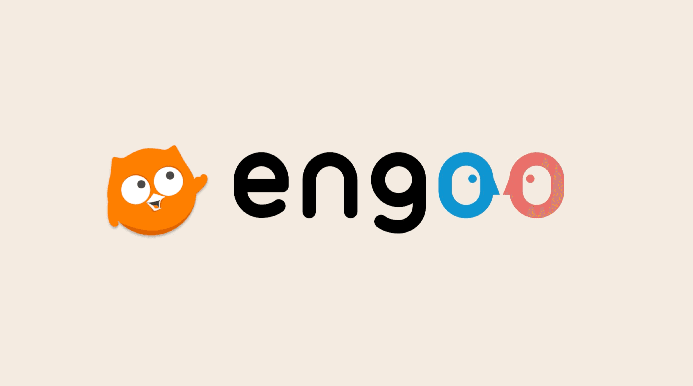
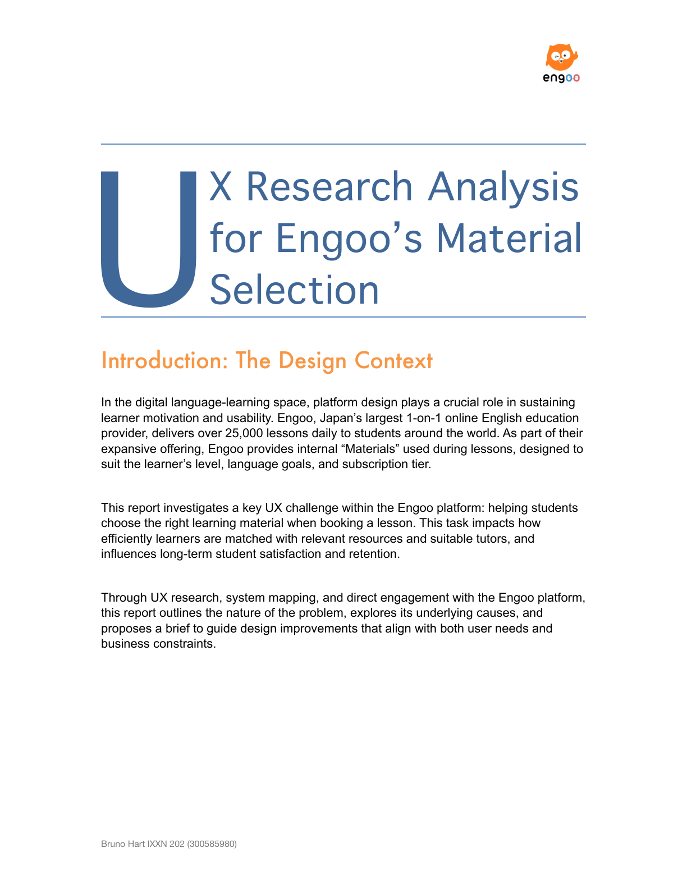
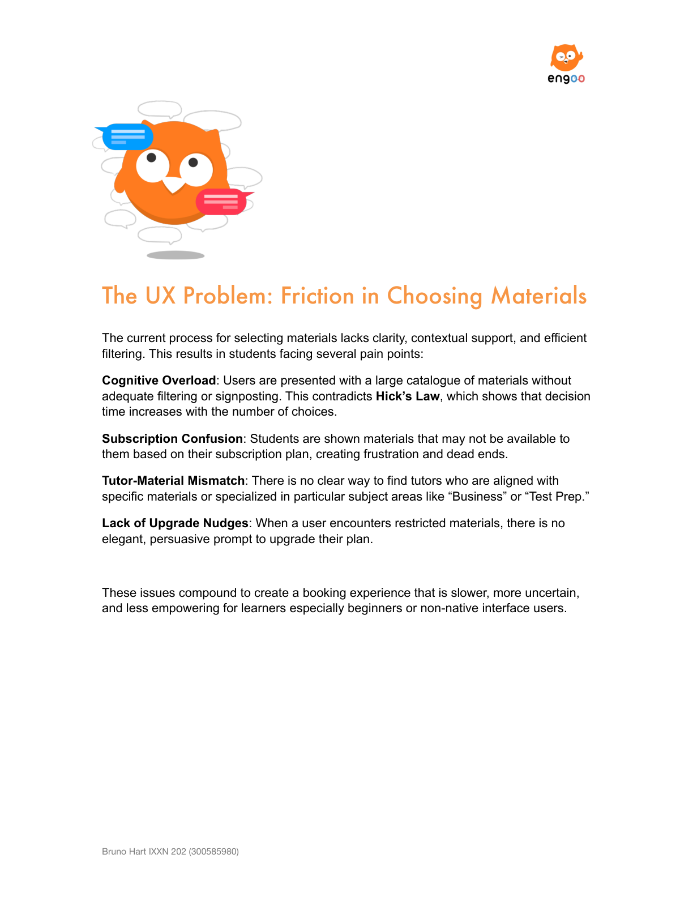
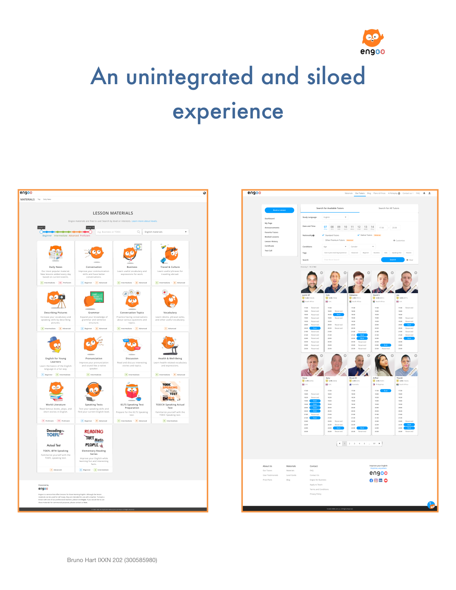
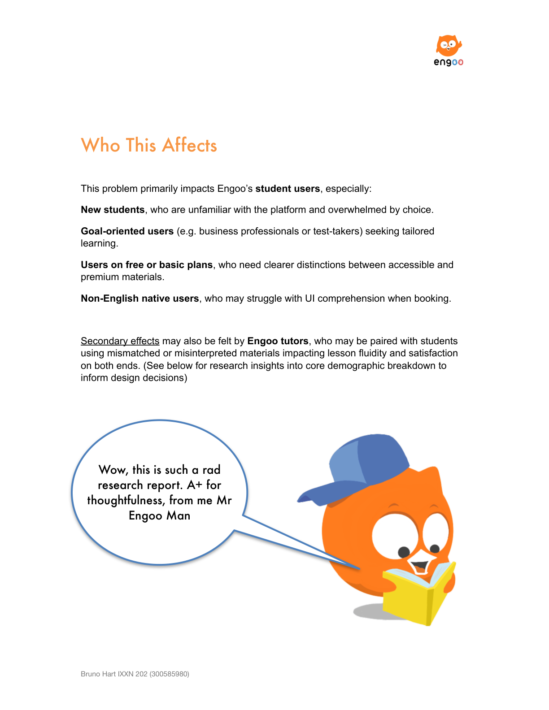
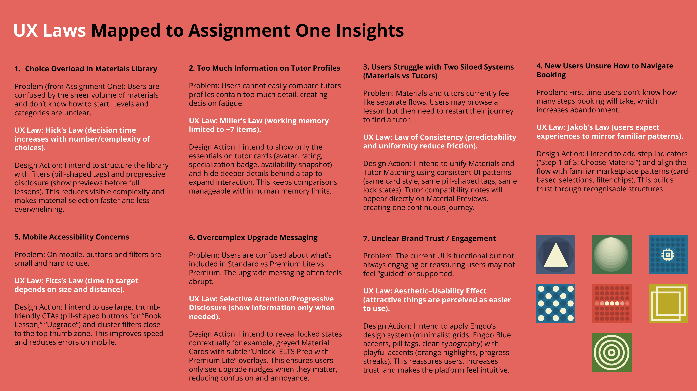
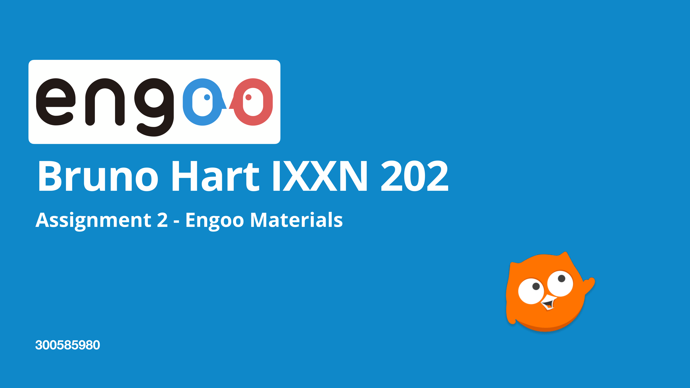
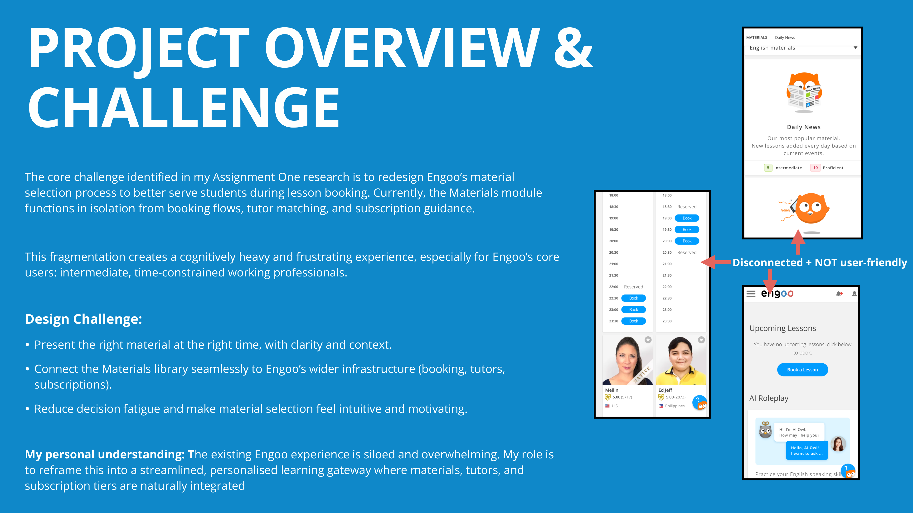
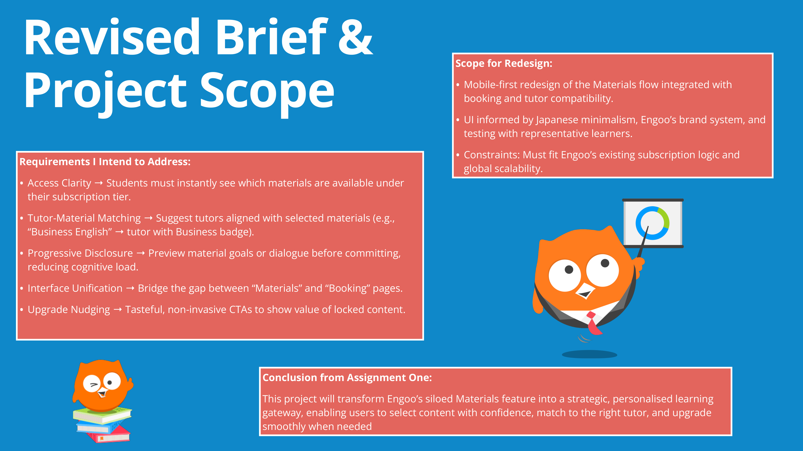

Engoo Customer UX
2024UX Research · Journey Mapping · Iterative Prototyping · Cognitive Load Reduction
Engoo is Japan's largest 1-on-1 online English education provider, delivering over 25,000 lessons daily to students worldwide. This project investigates how to reduce cognitive overload within Engoo's lesson booking experience — transforming a siloed materials module into a strategic, personalised learning gateway through system mapping, UX law analysis, and iterative Figma prototyping.

Designing Within a Business System
Engoo's Materials module — the system through which students select lesson content before booking — functions in isolation from the booking flow, tutor profiles, and subscription tiers. The result is a fragmented experience where users must navigate between disconnected interfaces to make a single booking decision.
The core user — an intermediate-level, time-constrained working professional — faces cognitive overload at every step: too many material categories without clear differentiation, subscription tier confusion between Standard and Premium content, and no relationship between tutor expertise and material suitability.
Through UX research, system mapping, and direct engagement with the Engoo platform, I identified the structural friction points: unclear material categorisation, inconsistent visual hierarchy, a lack of progressive disclosure, and a fundamentally siloed information architecture that forces users to hold too much in working memory.
"Present the right material at the right time, with clarity, context, and connection."Design Vision — Engoo Customer UX
Research Methods
- System Mapping
- Heuristic Evaluation
- Journey Mapping
- UX Laws Analysis
- Card Sorting
- Think-Aloud Testing
- First-Click Tests
- Cognitive Walkthrough




Mapping UX Laws to Platform Friction
To move from observed friction to actionable design direction, I mapped seven specific platform problems against established UX laws — Hick's Law, Miller's Law, Jakob's Law, the Law of Consistency, and the Aesthetic-Usability Effect. Each mapping produced a concrete design action grounded in cognitive science rather than aesthetic preference.
This framework ensured every design decision could be traced back to a specific user behaviour and a specific principle — making the rationale transparent and the outcomes measurable. The analysis also surfaced mobile accessibility concerns, where Engoo's desktop-first interface fails to translate effectively to the mobile context where many users book lessons.

From Siloed Tool to Strategic Gateway
The redesign reframes Engoo's Materials module from an isolated content library into an integrated gateway within the booking flow. Five design requirements guided the work: Access Clarity (reducing choice overload through progressive disclosure), Tutor-Material Matching (connecting expertise to content), Interface Unification (bridging the siloed systems), Upgrade Nudging (transparent subscription differentiation), and Mobile-First Adaptation.
The Figma prototype was built with variables, constraints, and complex component files to demonstrate a production-ready interaction model. Every screen was designed within Engoo's existing brand system — respecting the platform's visual language while restructuring the information architecture around user goals rather than internal taxonomy.



A Personalised Learning Gateway
The redesigned experience transforms Engoo's Materials module from a siloed content browser into a strategic, personalised learning gateway. By introducing progressive disclosure, tutor-material matching, and goal-based categorisation, the flow reduces cognitive load at every decision point while respecting the platform's existing brand identity and subscription model.
The project demonstrates how systematic UX analysis — grounded in cognitive science and validated through iterative prototyping — can produce meaningful improvements within the constraints of a live, large-scale product.